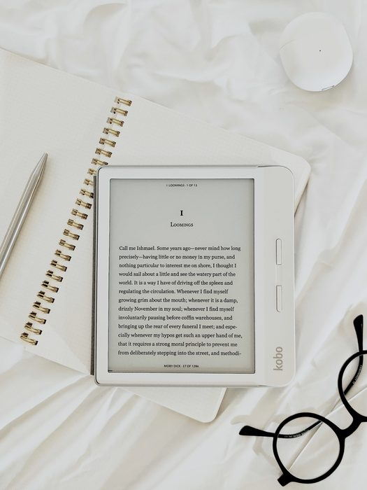
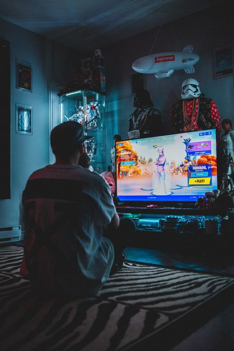
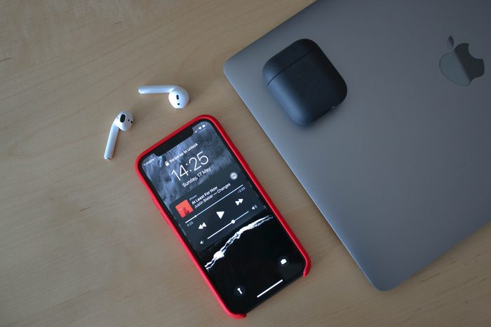

Hobbies
Indulging in hobbies is my key to joy and relaxation. One cherished pastime is reading, where books become portals to new realms of imagination and knowledge. Whether immersed in fiction or non-fiction, each book is a journey that broadens my horizons.

Nowadays, watching videos and playing video games provide a unique form of entertainment. The visual narratives and interactive experiences captivate my imagination, offering a modern escape from reality.

Music is a constant companion in my life, with its diverse melodies as a backdrop to various activities. The rhythmic tunes and soulful lyrics provide comfort and inspiration.

In addition, incorporating exercising as a hobby adds a physical dimension to my pursuits. Whether it is a brisk morning jog or hitting the gym, exercising not only contributes to my physical well-being but also serves as a means of unwinding and maintaining balance in a busy life. It is a hobby that energizes body and mind, complementing the diverse activities that contribute to my overall joy and fulfillment.
Moreover, my hobbies extend into the digital creative sphere. Programming is a stimulating challenge that allows me to build and innovate, while graphics designing lets me visually express ideas with a blend of art and technology.
In essence, my hobbies are not merely activities but threads weaving joy, fulfillment, and exploration into the fabric of my daily life. From reading and watching videos to playing video games, listening to music, programming, and graphics designing, each hobby is a unique avenue through which I find happiness and creative expression.